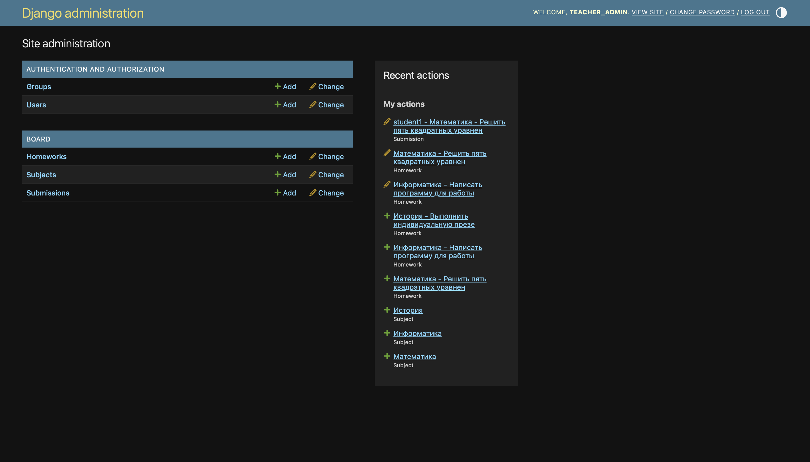
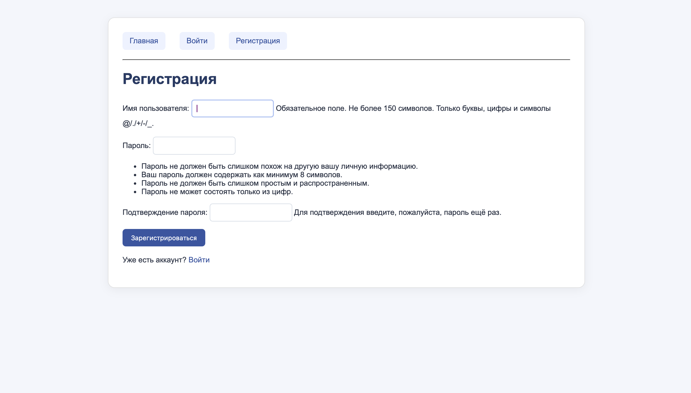
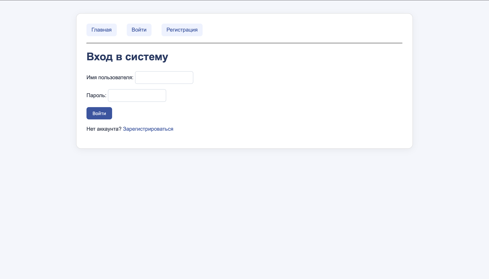
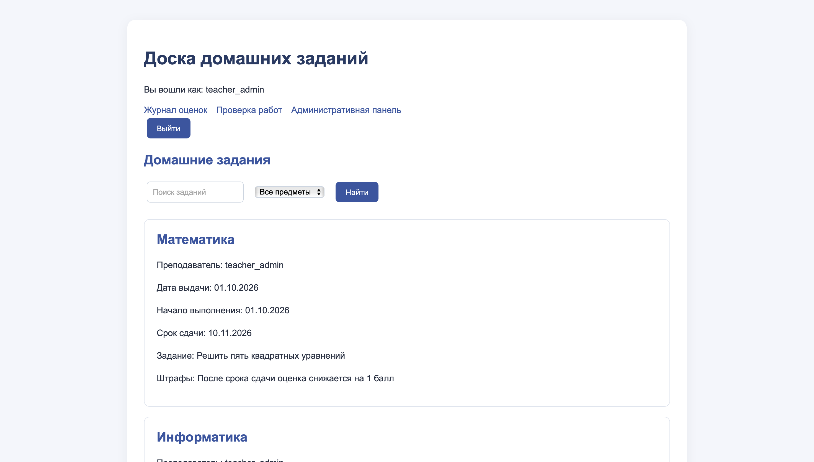
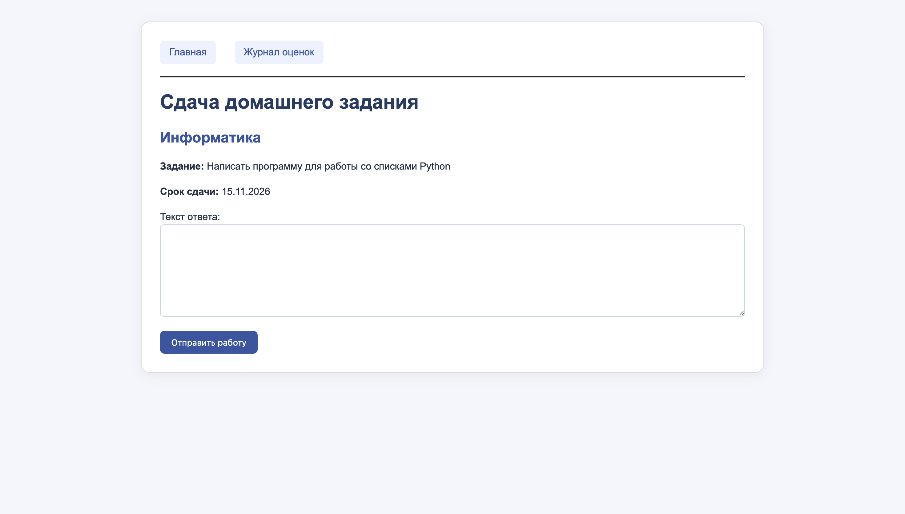
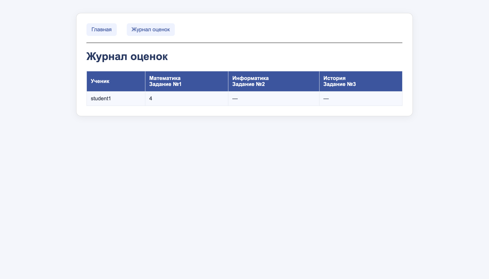
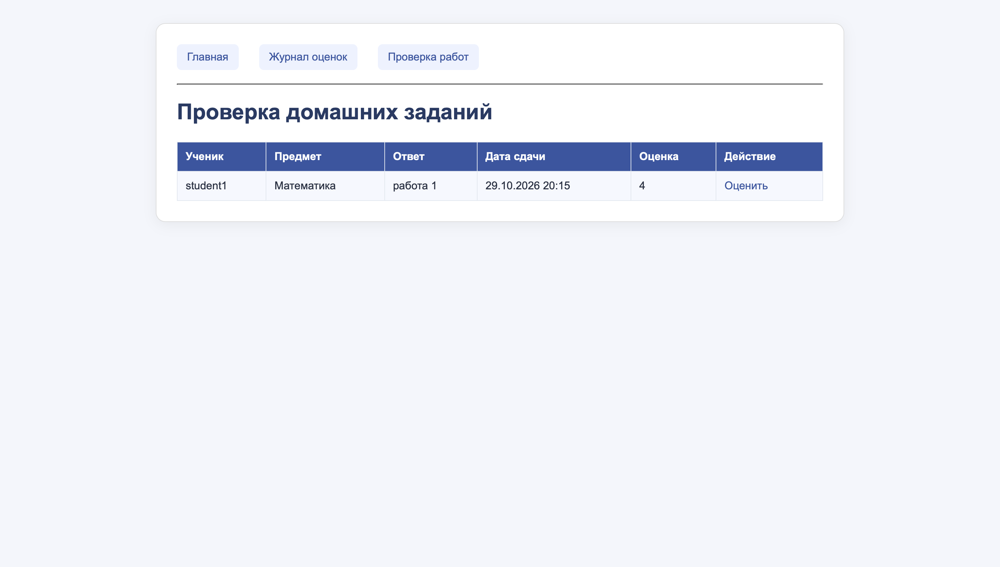
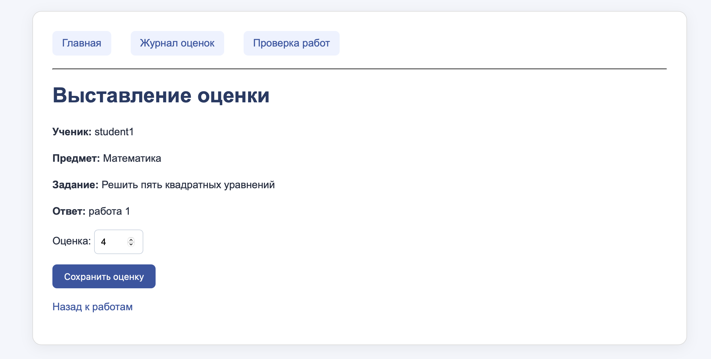

Лабораторная работа №2. Разработка сайта на Django
Вариант №2: «Доска домашних заданий»
Цель работы
Изучить основы разработки веб-приложений с использованием фреймворка Django, шаблонизатора Jinja2 и СУБД PostgreSQL. Научиться создавать модели данных, обрабатывать HTTP-запросы, работать с формами, организовывать регистрацию и авторизацию пользователей, а также разграничивать права доступа.
В лабораторной работе реализован сайт «Доска домашних заданий», на котором ученики могут просматривать задания и сдавать текстовые ответы, а преподаватель может проверять работы и выставлять оценки.
1. Используемые технологии
| Технология | Назначение |
|---|---|
| Python | Язык программирования серверной части |
| Django | Фреймворк для создания сайта и обработки запросов |
| PostgreSQL | Хранение пользователей, заданий, ответов и оценок |
| Django ORM | Работа с таблицами базы данных через модели Python |
| Jinja2 | Формирование HTML-страниц с динамическими данными |
| HTML, CSS | Структура и оформление пользовательского интерфейса |
| Django-admin | Управление предметами, заданиями и оценками |
Подготовительные практики
Перед индивидуальным заданием были выполнены практики 2.1–2.3: создан учебный Django-проект с моделями автовладельцев и автомобилей, связями через промежуточную таблицу владения, формами CRUD, административной панелью и расширенной моделью пользователя. Для основного задания был создан отдельный проект homework_board.
2. Структура проекта
Основные файлы :
homework_board/
├── manage.py
├── homework_project/
│ ├── settings.py
│ ├── urls.py
│ └── jinja2.py
└── board/
├── models.py
├── views.py
├── forms.py
├── admin.py
├── urls.py
├── migrations/
├── jinja2/board/
│ ├── base.html
│ ├── homework_list.html
│ ├── register.html
│ ├── login.html
│ ├── submit_homework.html
│ ├── grade_list.html
│ ├── teacher_submissions.html
│ └── grade_submission.html
└── static/board/style.css
manage.py используется для запуска сервера и миграций. В models.py описаны таблицы, в views.py логика обработки запросов, в urls.py адреса страниц. Шаблоны Jinja2 находятся в папке jinja2/board/, а стили в static/board/style.css.
3. Модель данных
Для хранения данных используется PostgreSQL. В приложении board созданы три модели, связанные со стандартной моделью пользователя Django.
| Модель | Основные поля | Назначение |
|---|---|---|
User (Django) |
username, password, is_staff |
Ученик, преподаватель или администратор |
Subject |
id, name |
Дисциплина |
Homework |
subject, teacher, assigned_date, start_date, due_date, description, penalty_info |
Домашнее задание |
Submission |
homework, student, answer_text, submitted_at, grade |
Сданная работа и её оценка |
Связи между моделями
| Связь | Тип | Объяснение |
|---|---|---|
Subject → Homework |
Один ко многим | По одному предмету может быть несколько заданий |
User (teacher) → Homework |
Один ко многим | Один преподаватель может выдать несколько заданий |
Homework → Submission |
Один ко многим | Одно задание могут сдавать разные ученики |
User (student) → Submission |
Один ко многим | Один ученик может сдать несколько работ |
Основные модели models.py
class Subject(models.Model):
name = models.CharField(max_length=100, unique=True)
def __str__(self):
return self.name
class Homework(models.Model):
subject = models.ForeignKey(Subject, on_delete=models.CASCADE)
teacher = models.ForeignKey(settings.AUTH_USER_MODEL, on_delete=models.CASCADE)
assigned_date = models.DateField(default=timezone.localdate)
start_date = models.DateField()
due_date = models.DateField()
description = models.TextField()
penalty_info = models.TextField(blank=True)
def __str__(self):
return f"{self.subject} - {self.description[:30]}"
class Submission(models.Model):
homework = models.ForeignKey(Homework, on_delete=models.CASCADE)
student = models.ForeignKey(settings.AUTH_USER_MODEL, on_delete=models.CASCADE)
answer_text = models.TextField()
submitted_at = models.DateTimeField(auto_now_add=True)
grade = models.IntegerField(null=True, blank=True)
def __str__(self):
return f"{self.student.username} - {self.homework}"
Поле ForeignKey задаёт связь с другой таблицей. on_delete=models.CASCADE означает удаление зависимых записей при удалении связанного объекта. Поле submitted_at заполняется автоматически при сдаче работы, а grade может оставаться пустым до проверки преподавателем.
PostgreSQL и миграции
Для подключения базы данных в settings.py используется движок:
'ENGINE': 'django.db.backends.postgresql',
'NAME': 'homework_board_db',
После создания моделей структура базы формируется командами:
python3 manage.py makemigrations
python3 manage.py migrate
Первая команда создаёт миграции, вторая применяет их к PostgreSQL.
4. Административная панель Django
Модели Subject, Homework и Submission зарегистрированы в board/admin.py. Для удобства используются list_display, list_filter и search_fields.
Пример настройки списка сданных работ:
@admin.register(Submission)
class SubmissionAdmin(admin.ModelAdmin):
list_display = ['id', 'student', 'homework', 'submitted_at', 'grade']
list_filter = ['grade', 'homework__subject']
search_fields = ['student__username']
Через административную панель преподаватель может просматривать ответы учеников и устанавливать значение поля grade.
административная панель

5. Регистрация и авторизация пользователей
На сайте реализованы страницы регистрации, входа и выхода. Для регистрации используется стандартная форма Django UserCreationForm, которая проверяет вводимые данные и сохраняет пароль в виде хеша.
Регистрация в views.py
def register(request):
if request.method == 'POST':
form = UserCreationForm(request.POST)
if form.is_valid():
form.save()
return redirect('login')
else:
form = UserCreationForm()
return render(request, 'board/register.html', {'form': form})
Для авторизации используются LoginView и LogoutView из Django. Сессия позволяет определить текущего пользователя через request.user.
В Jinja2-шаблонах формы отправляются методом POST и используют CSRF-защиту:
<form method="post">
{{ csrf_input }}
{{ form.as_p() | safe }}
<button type="submit">Зарегистрироваться</button>
</form>
регистрация и логин


6. Просмотр домашних заданий
Главная страница показывает задания по всем дисциплинам: название предмета, преподавателя, дату выдачи, начало и срок выполнения, описание и информацию о штрафах.
Поиск, фильтрация и пагинация
Во views.py реализован поиск по описанию задания и названию предмета, фильтрация по дисциплине, а также разбиение результатов на страницы.
def homework_list(request):
homeworks = Homework.objects.select_related('subject', 'teacher').order_by('due_date')
subjects = Subject.objects.all()
search = request.GET.get('search', '').strip()
subject_id = request.GET.get('subject', '')
if search:
homeworks = homeworks.filter(
Q(description__icontains=search) |
Q(subject__name__icontains=search)
)
if subject_id:
homeworks = homeworks.filter(subject_id=subject_id)
paginator = Paginator(homeworks, 2)
page_obj = paginator.get_page(request.GET.get('page'))
Q() объединяет условия поиска, icontains позволяет искать подстроку без учёта регистра, Paginator показывает по два задания на одной странице.
В HTML используется Jinja2-цикл:
{% for homework in page_obj %}
<div class="homework">
<h2>{{ homework.subject.name }}</h2>
<p>Задание: {{ homework.description }}</p>
<p>Срок сдачи: {{ homework.due_date.strftime('%d.%m.%Y') }}</p>
</div>
{% else %}
<p>Задания не найдены</p>
{% endfor %}
скрин доски

7. Сдача домашнего задания
Авторизованный ученик может открыть форму задания и отправить текст ответа. Для этого используется модель Submission и форма SubmissionForm, содержащая только поле answer_text.
Основная логика submit_homework()
@login_required
def submit_homework(request, homework_id):
homework = get_object_or_404(Homework, pk=homework_id)
if request.user.is_staff:
messages.error(request, 'Преподаватель не может сдавать задания.')
return redirect('homework_list')
if Submission.objects.filter(homework=homework, student=request.user).exists():
messages.info(request, 'Вы уже сдали это задание.')
return redirect('homework_list')
if request.method == 'POST':
form = SubmissionForm(request.POST)
if form.is_valid():
submission = form.save(commit=False)
submission.homework = homework
submission.student = request.user
submission.save()
return redirect('homework_list')
Декоратор @login_required требует авторизации. Проверка is_staff запрещает преподавателю сдавать работы как ученик. Условие exists() не позволяет повторно отправить то же задание через это представление.
commit=False создаёт объект без немедленной записи в базу: сначала сервер назначает текущего ученика и домашнее задание, затем вызывает save().
После отправки появляется запись в Submission, а оценка остаётся пустой до проверки.
скрин формы сдачи

8. Журнал оценок
На странице /grades/ формируется таблица оценок всех обычных пользователей (is_staff=False) по домашним заданиям.
Столбцы соответствуют заданиям, а строки ученикам. Если оценка отсутствует, выводится знак —.
Формирование данных для таблицы
students = User.objects.filter(is_staff=False).order_by('username')
homeworks = list(Homework.objects.select_related('subject').order_by('id'))
submissions = Submission.objects.all()
grades = {}
for submission in submissions:
grades[(submission.student_id, submission.homework_id)] = submission.grade
Ключ словаря grades - пара (ID ученика, ID задания). По этой паре определяется оценка для конкретной ячейки таблицы. При подготовке строк перебираются все ученики и все задания.
Фрагмент шаблона Jinja2:
{% for row in rows %}
<tr>
<td>{{ row.student.username }}</td>
{% for grade in row.grades %}
<td>{{ grade }}</td>
{% endfor %}
</tr>
{% endfor %}
скрин журнала

9. Интерфейс преподавателя и разграничение прав
Для преподавателя добавлены страницы просмотра сданных работ и выставления оценок прямо на сайте, помимо Django-admin.
Проверка прав доступа
@login_required
def teacher_submissions(request):
if not request.user.is_staff:
return HttpResponseForbidden('Доступ запрещён')
submissions = Submission.objects.select_related(
'student', 'homework__subject'
).order_by('-submitted_at')
return render(request, 'board/teacher_submissions.html', {
'submissions': submissions
})
Доступ к странице имеют только авторизованные пользователи с is_staff=True. Обычный ученик получает HTTP-ответ 403 Forbidden.
Для выставления оценки используется GradeForm, ограничивающая допустимое значение диапазоном от 1 до 5. При сохранении формы с instance=submission редактируется уже существующая работа:
form = GradeForm(request.POST, instance=submission)
if form.is_valid():
form.save()
В Jinja2-ссылке на работу её ID передаётся через args:
<a href="{{ url('grade_submission', args=[submission.id]) }}">
Оценить
</a>
Таким образом преподаватель может видеть текст ответа ученика и выставлять оценку непосредственно в браузере. Проверка прав выполняется не только в шаблоне, но и на сервере.
скрины интерфейса преподавателя


10. Оформление интерфейса
Пользовательские страницы реализованы с помощью Jinja2, а оформление вынесено в CSS-файл board/static/board/style.css.
Используются светлый фон, карточки заданий, стилизованные кнопки и формы, таблица журнала, навигация и адаптация под небольшую ширину экрана.
Подключение CSS в Jinja2:
<link rel="stylesheet" href="{{ static('board/style.css') }}">
Для нескольких страниц используется общий шаблон base.html с блоком:
{% block content %}
{% endblock %}
Административная панель Django продолжает использовать стандартный шаблонизатор Django; пользовательский интерфейс работает с Jinja2.
11. Основные страницы сайта
| URL | Метод | Назначение | Доступ |
|---|---|---|---|
/ |
GET | Просмотр заданий, поиск, фильтрация, пагинация | Все |
/register/ |
GET, POST | Регистрация | Все |
/login/ |
GET, POST | Вход | Все |
/logout/ |
POST | Выход | Авторизованные |
/homework/<id>/submit/ |
GET, POST | Сдача текстового ответа | Ученик |
/grades/ |
GET | Журнал оценок | Авторизованные |
/teacher/submissions/ |
GET | Просмотр сданных работ | Преподаватель |
/teacher/submissions/<id>/grade/ |
GET, POST | Выставление оценки | Преподаватель |
/admin/ |
GET, POST | Администрирование данных | Администратор |
12. Проверка работы приложения
Для проверки функциональности предусмотрены следующие сценарии:
| Действие | Ожидаемый результат |
|---|---|
| Регистрация нового пользователя | Пользователь создаётся и может войти в систему |
| Поиск задания по названию дисциплины | Выводятся соответствующие задания |
| Выбор дисциплины в фильтре | Список ограничивается выбранным предметом |
| Переключение страниц | Отображается следующая часть списка заданий |
| Сдача ответа учеником | В базе появляется запись Submission |
| Повторная попытка сдачи | Отображается сообщение о ранее сданном задании |
| Выставление оценки преподавателем | Оценка сохраняется и появляется в журнале |
| Открытие страницы преподавателя учеником | Возвращается ошибка 403 |
Для запуска проекта из папки homework_board используются команды:
python3 manage.py check
python3 manage.py runserver
После запуска сайт доступен локально по адресу http://127.0.0.1:8000/
Вывод
В ходе лабораторной работы был создан сайт «Доска домашних заданий» с использованием Django, PostgreSQL и Jinja2.
Были реализованы модели дисциплин, домашних заданий и сданных работ, административная панель, регистрация и авторизация пользователей, просмотр и поиск заданий, сдача текстовых ответов и выставление оценок.